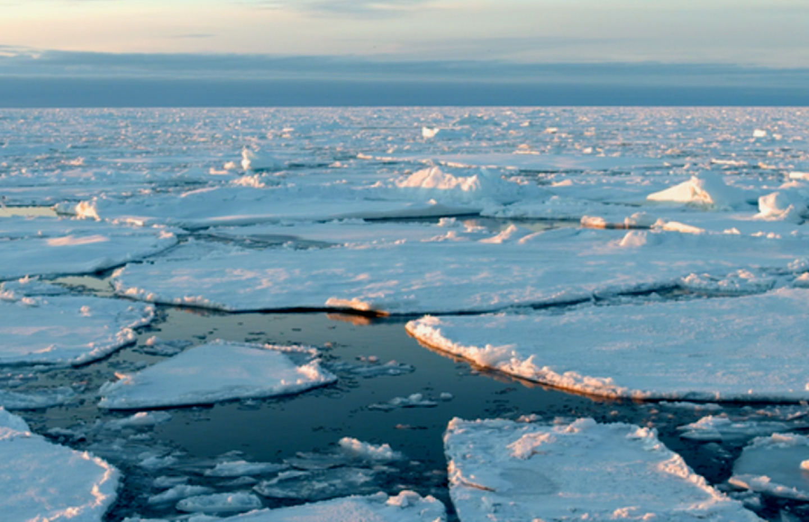
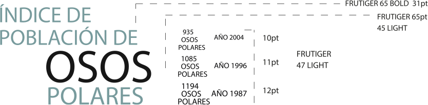
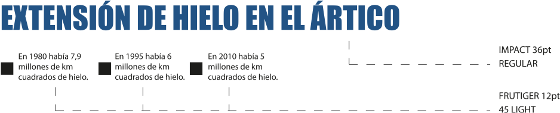
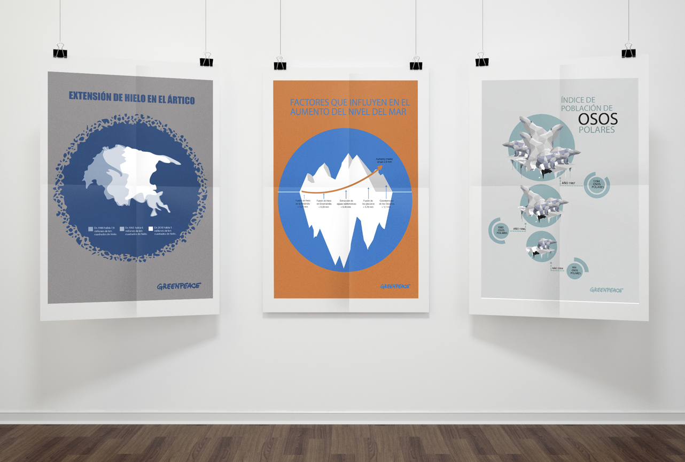
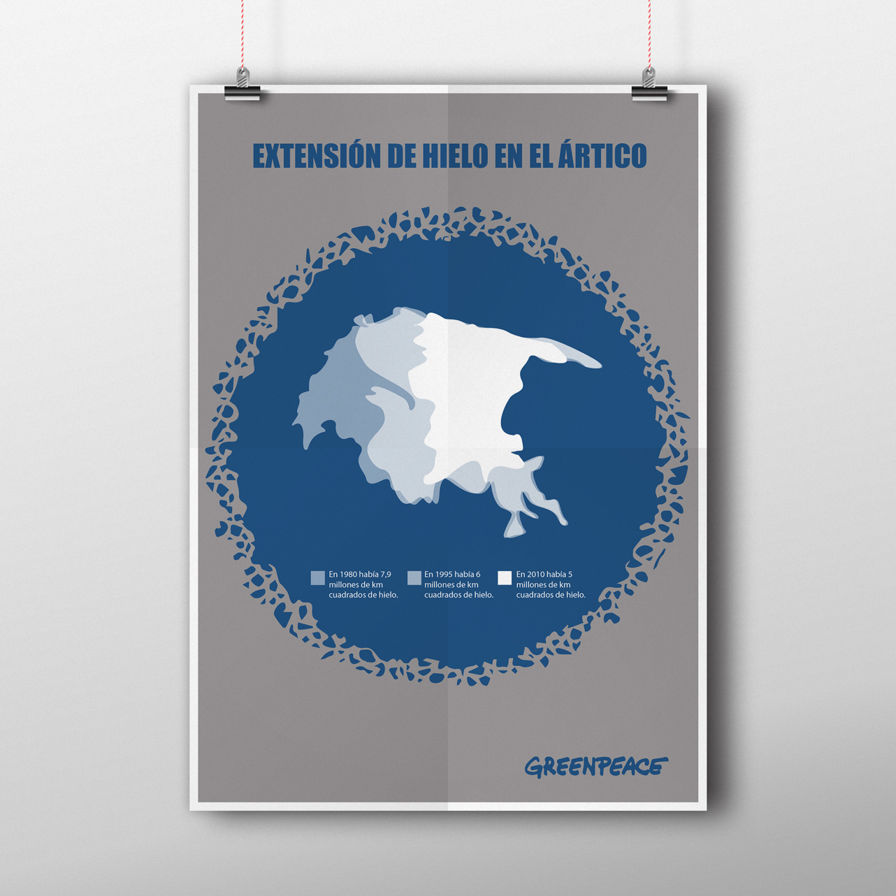
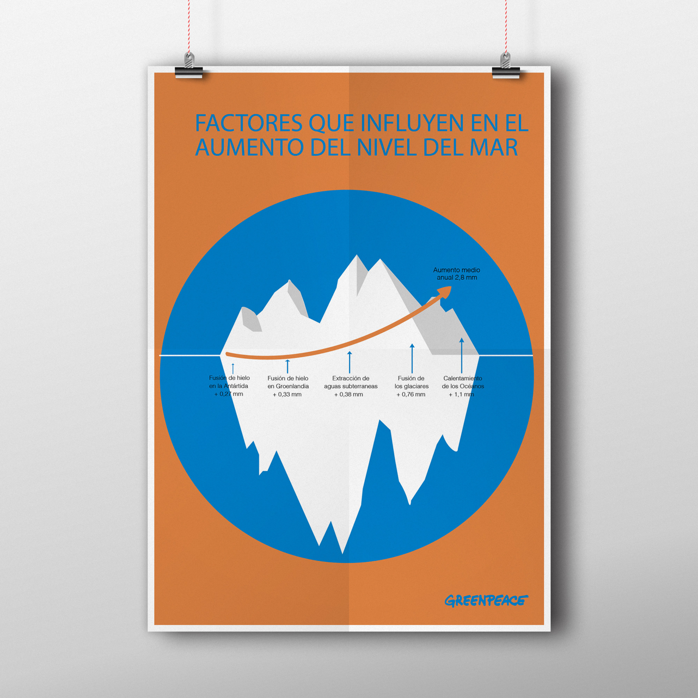
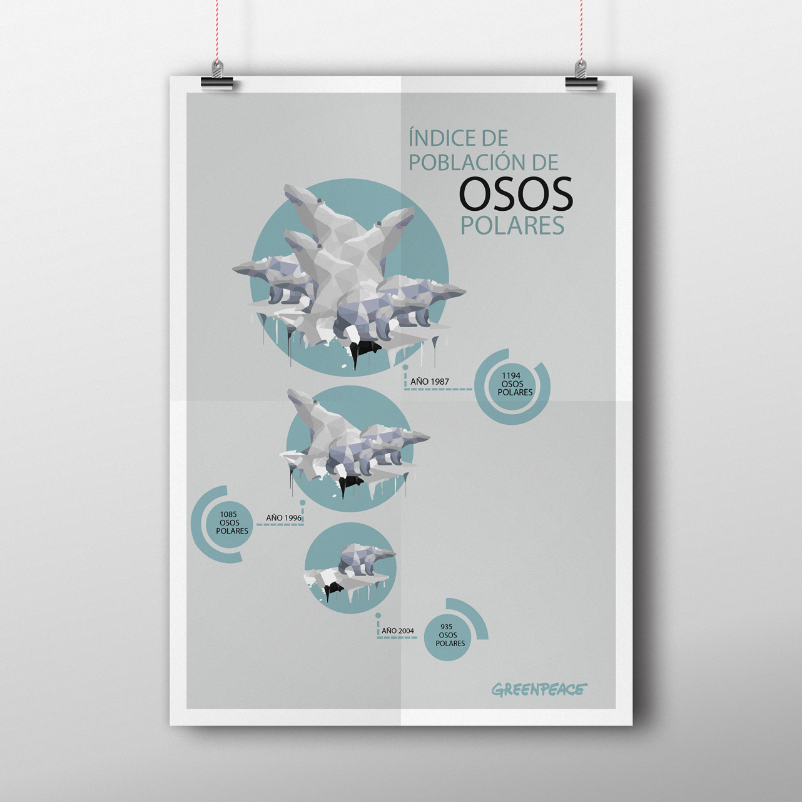

Proyectos / Proyecto de infografías, Greenpeace
GREENPEACE
GREENPEACE
Este proyecto es creado a partir del análisis de gráficas y documentos, que la organización ecologista Greenpeace proporciona a través de su web y de diferentes artáculos relaccionados con el tema a tratar, el deshielo. Trabajo individual, realizado para un proyecto de clase.
Programas utilizados para el proyecto


Referentes

Tratamiento tipográfico
- 
- 
Tratamiento del color

Escogí una gama cromática de azules, ya que se trataban temas relacionados con el agua; estos fueron contrastados con colores más oscuros como gris y negro, utilizado sobretodo en la tipografía.
Aplicaciones
- 
- 
- 
- 